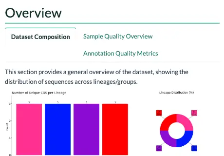
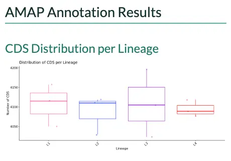
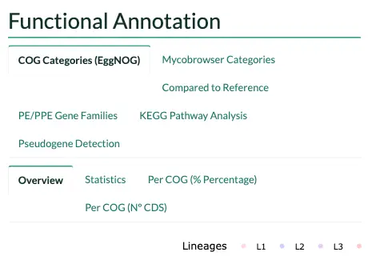
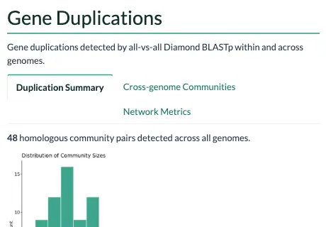
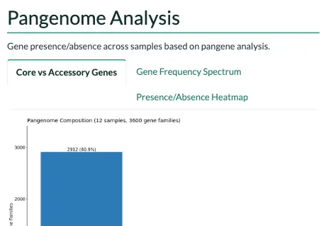
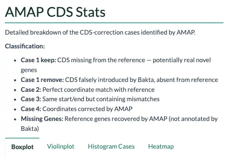
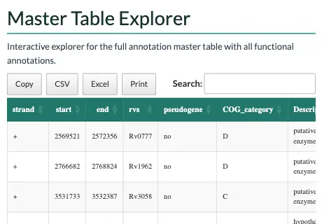

Describes AMAP on main, ahead of 1.0.1: what changed
The report
Every run ends in one file, results/. It is self-contained: all the figures, tables and JavaScript are embedded, so it opens with no network and survives being emailed to someone who has never heard of Nextflow.
To see what the sections look like before running anything, open the example report: a rendered report for twelve MTBC genomes across four lineages.
NoteThe example uses generated data
The twelve samples in it are synthetic. The distributions are drawn around a real M. tuberculosis CDC1551 run, so the shapes are representative, but no conclusion should be drawn from the numbers themselves.
bin/ builds that dataset if you want to render the report yourself without waiting for a pipeline run.
What is in it
#final_report.html, section by sectionsynthetic data

OverviewDataset composition, then sample quality and annotation quality: where an outlier sample shows itself.
Annotation resultsGenes per lineage, the genes the reference does not have, the correction summary and the reference genes Bakta missed.
Functional annotationCOG and Mycobrowser categories, the comparison with the reference, PE/PPE families, KEGG pathways and pseudogenes.
DuplicationsCommunity sizes, the communities shared across genomes and their network metrics.
PangenomeCore and accessory genes, the gene frequency spectrum and the presence and absence of every gene.
CDS statisticsHow many genes fall in each case, lineage by lineage: box and violin plots with Dunn's tests, the share of each case, a heatmap and a table per case.
Master tableEvery gene of every sample in one table to search, sort and export.Overview
#Dataset composition, then a per-sample quality panel: CDS counts, correction rates and missing reference genes. The annotation quality tab carries coding density, hypothetical percentage and genome size, which is where an outlier sample declares itself before you have gone any further.
Annotation results
#CDS distribution per lineage, the genes with no counterpart in the reference, and the correction summary: how many genes fell into each case and what the adjudication did with them. Read this alongside the correction algorithm.
Missing reference genes get both a heatmap, for spotting a gene absent from a whole lineage rather than one sample, and a searchable table.
Functional annotation
#COG categories from eggNOG, Mycobrowser functional categories for MTBC, and a comparison against the reference distribution. Each has its own per-category breakdown in counts and percentages, with the statistical tests alongside.
PE/PPE gene families get their own section, since they are both the hardest part of an MTBC genome to annotate and usually the most interesting. The pseudogenes close it: how many AMAP called in each sample, lineage by lineage, a sample with none at 0, the same genes the QC table counts and the GFF3 marks pseudo=true. The master table's note column says why each is a pseudogene.
KEGG pathways
#The most represented metabolic pathways, and how they differ between lineages.
Duplications
#Community sizes, cross-genome homologous pairs and the network topology metrics. Duplication metrics explains what each number means.
Pangenome
#Core, softcore, shell and cloud classification, the gene frequency spectrum, and presence/absence heatmaps.
CDS statistics
#How many genes fall in each case, lineage by lineage: box and violin plots with Dunn's tests between lineages, the share of each case in every lineage, a heatmap of the means, and a table per case with the count, mean, median and spread of each lineage.
Master table explorer
#Every gene of every sample in one searchable, sortable table, with the functional annotation attached. Useful for answering a specific question without leaving the report.
What changes when steps are skipped
#--skip_typing: Everything still renders, but every sample is grouped underUntyped, so the per-lineage comparisons have a single group and the statistical tests drop out.--skip_mycobrowser: The Mycobrowser and PE/PPE sections are omitted. COG, KEGG, pangenome and duplications are unaffected. This is automatic for non-MTBC organisms.--skip_: No report at all. The run stops after correction.functional_ annotation
Rendering it yourself
#The report is bin/, rendered by the FINAL_REPORT process. To iterate on it without running the pipeline:
$ python3 bin/report/demo/make_demo.py demo_inputs $ docker run --rm -v "$PWD:/w" -w /w paururo/amap:latest \ Rscript -e 'rmarkdown::render("bin/report/ output_file="/w/demo.html", params=list(version="v1.0.1", cog_file="/report_AMAP.Rmd", w/ myco_file="/demo_inputs/ input_cog.txt", w/ summary_file="/demo_inputs/ input_myco.txt", w/ empty_file="/demo_inputs/ input_summary.txt", w/ rvmissing_file="/demo_inputs/ input_noref.txt", w/ mastertable_file="/demo_inputs/ input_rvmissing.txt", w/ pangene_file="/demo_inputs/ input_mastertables.txt", w/ dup_file="/demo_inputs/ input_pangene.txt", w/ qc_file="/demo_inputs/ homologous_communities.tsv", w/ demo_inputs/ input_qc.txt"))'
WarningKeep it self-contained
Nothing in the Rmd, header.html or styles.css may point at a remote URL. pandoc will fetch and inline a remote resource when the machine rendering has a network, which hides the problem, and leave it dangling when it does not. A report rendered on an isolated compute node then arrives with a broken image and a browser trying to reach the internet.
Both logos live next to the Rmd for this reason, and the image zoom is plain DOM rather than jQuery from a CDN.